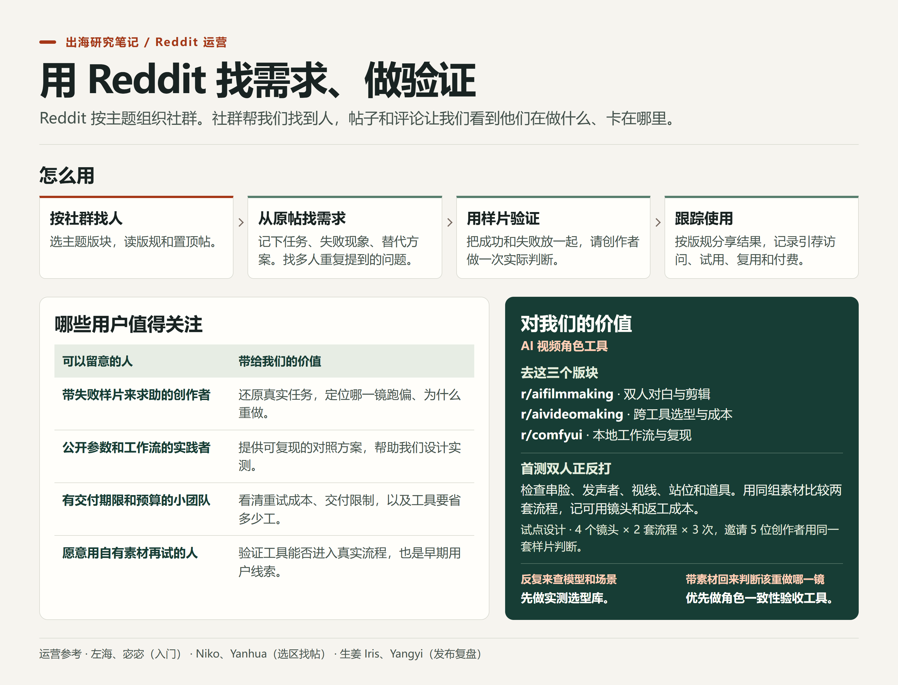

怎么用
- 按社群找人。 选相关版块，读版规和置顶帖。
- 从原帖找需求。 记下任务、失败现象、替代方案，找多人反复提到的问题。
- 用样片验证。 同时展示成功和失败样片，请创作者做一次实际判断。
- 跟踪使用。 按版规分享结果，记录引荐访问、试用、复用和付费。
社区调研与产品冷启动
从中文创作者的运营案例提炼找人、找需求和小规模验证的方法，再用 3 个版块的 12 条原帖定位 AI 视频角色的反复痛点，判断该先帮创作者选工具，还是帮他们找出要重做的镜头。
从主题社群找到人，再用他们遇到的具体问题决定我们要验证什么。

在 三个版块 中分别看双人对白与剪辑、跨工具选型与成本、本地工作流与复现。
用同组角色和素材比较两套流程。每套流程的 4 个镜头各生成 3 次，共 24 次。记录串脸、说话人、视线、站位、道具和返工成本，请 5 位创作者用同一套样片判断。
如果创作者反复回来查模型和场景，先做实测选型库。如果他们带素材回来判断哪一镜要重做，优先做角色一致性验收工具。
查看首轮验证清单运营参考 · 左海、宓宓（入门） · Niko、Yanhua（选区找帖） · 生姜 Iris、Yangyi（发布复盘）查看人物与原帖
AI 视频角色工具 · Reddit 实地调研
调研以制作英文短片、短剧或系列视频的创作者为主。选了 3 个版块，核对了 12 条讨论，其中 11 条是问题或求助，1 条是成片后的制作复盘。核对。
最值得先测的任务是用两位固定角色做出能接在一起的正反打，让创作者判断脸、声线、视线、站位和道具在哪一镜出错。先用对照样片检验验收清单有没有用，再决定做可复用的选型库还是做镜头验收工具。
首选 · 叙事短片与对话场景
能看到创作者从出镜素材到成片的失败点，适合确认哪些问题会导致镜头弃用或重做。
对照 · 多工具、长视频与小团队
能看不同生成工具面临的相同问题，也能看到预算、重试和交付时间如何影响选型。
技术验证 · 本地工作流与可复现失败
帖子常给模型、显存、参考图或节点信息。适合补齐测试记录字段，区分输入、模型和硬件的影响。
筛选对照也看了 r/aivideo 和 r/VEO3。前者更适合按规定提交完成的作品，后者对 Veo 与 Flow 有参考价值，推广工具需先联系版主。首轮选的三个版块能同时覆盖叙事剪辑、通用工具选型和本地工作流。r/aivideo 规则 · r/VEO3 规则栏
| 痛点 | 用户遇到的具体失败 | 对我们意味着什么 |
|---|---|---|
| 同一角色变脸 | 参考图和角色描述保持一致，切镜、转头或换景之后，脸型、衣着或远景中的细节仍会变。 | 逐镜验收身份，用首帧、中间帧与末帧查看。转头变脸 · 跨片段漂移 · 参考图与本地参数 |
| 双人对话不连贯 | 两人同框时互相借脸，切反打时眼神对不上，声音忽然变成另一种。原生音视频有时改一句就需要重生整镜。 | 分别验收 A／B 身份、发声者、声线和视线，另算改一句台词的代价。双人同框与改台词 · 反打与声线求助 |
| 场景和动作掉线 | 同一人物在房间里的位置跳变，背景、人物比例或道具状态在换机位后对不上。 | 参考图之外保留站位、道具和动作状态。剪辑时核对相邻镜头能否接上。位置跳变 · 四角色走位 · 角色与布景共存 |
| 长镜头和拼接退化 | 有人在连续转头时出现脸部变形，有人把长镜拆成短片后发现接缝可见。 | 保留一项较长的测试镜头，并单独检查末段和拼接处。连续转头 · 长镜伪影与接缝 |
| 返工、积分和工时 | 小团队要兼顾生成速度、订阅与非技术剪辑师上手，失败镜头仍然消耗额度和编辑时间。 | 优先比较每个可用镜头的总支出与工时。保留所有失败样本。广告团队的交付约束 · 积分耗尽 · 先用便宜的静帧找构图 |
用 character consistency、two-character dialogue、eyelines、face drift、blocking、re-render 和 credits 等英文词，逐版块查找公开讨论。只收原文可读、有具体任务或失败现象的样本。帖子作者与回复者的自述用于找假设，取样足以设计测试，尚不足以估算发生率或付费意愿。
分开生成再合成会有贴上去的感觉。一起生成时两人的脸偶尔互相混入，改一行对白还可能重做整镜。
作者列出跨镜脸漂、声线变化、眼神错位和反打剪辑不连续，正在找可用工作流。
作者在 Google Flow 用角色设定图维持外形，场景和人物相对位置仍会跳变。
作者用头像与服装参考维持身份，后期修正变声；多人比例和站位出错时先重做较便宜的构图静帧。
即使用三视图作参考，人物连续转头时下颌仍会变形，十五秒内就能出现。
作者尝试用 Blender 和本地工作流约束镜头。单个镜头效果不错，换角度时角色位置、动作和场景仍难重现。
两人团队需要在几天内交付广告素材。作者说固定种子和复用图像提示仍会漂移，还需要控制订阅与操作成本。
创作者反复生成合适的素材时很快用完积分。此帖补充成本证据，主题集中在重试和额度。
作者给了 MiniMax H3 参考生视频配置和 12 GB 显存环境，想知道硬件、模型和角色微调分别能改善多少。
作者用 LTX 2.3 做角色进场。同一提示词与配置下身体和服饰还认得出，面部随生成变化。
作者在自己的设置下从约五秒往更长生成时遇到脸漂和画面退化，拆段后接缝依然可见。
初学者想让服装和姿势按要求变化，同时让人物身份和背景空间保持稳定。
首轮产品验证
0 / 6 已完成
用自有或明确授权的虚构角色 A、B，固定服装、机位意图、道具和台词。选一个支持所需时长、参考图和音频的模型。对照组直接用角色参考生成，实验组用同一组素材先固定每镜首帧再生视频。
记录字段可直接用：镜头号、流程、生成序号、模型版本、素材与参数、失败类型、是否可剪、积分或金额、生成与人工耗时、需重做的镜头。数值门槛是试点设计，模型结果和用户反馈待实测。
研究结论
以做英文市场的独立站或 AI 工具为应用场景。真实需求和可追踪的用户行为，决定是否继续投入。
找具体人群在什么场景下求助、现用方案哪里不够用、他们愿意花多少时间解决。一个高赞帖可以提示方向，多个社区和独立发言的重复问题更适合进入验证。
先按版规回应已经发生的讨论。等我们有可复现的过程、结果或反例，再考虑单独发帖。一个帖子只承担一个目标，例如求反馈、验证具体需求或解释一种做法。
曝光看可见性，评论看问题和反馈，访问看引流，激活与付费看业务结果。GEO 和 AI 辅助可以另行测试，分别记录引用变化与节省工时。
在做产品冷启动 Niko 选区 · Iris 的发布节奏 · 宓宓获客复盘
已有少量稳定反馈 Yangyi 运营复盘 · 人工审阅工作流 · 监测搜索可见性
案例数据
数字来自作者记录。每行保留原始指标和观察范围，方便回到原帖核对。
| 案例 | 作者报告的结果 | 对我们可用的信号 |
|---|---|---|
| 生姜 Iris | 约 3 万曝光一周 · Reddit 社区运营 | 适合参考选区和发布节奏，后续看访问和使用数据。 |
| 左海 | 约 4 万浏览单帖 · 后续遭遇封禁 | 触达和社区处置是两项独立记录。 |
| 夏林果 | 约 6,000 曝光新号首帖 · 站内可见性 | 可记录首帖早期反馈，再补看读者是否持续讨论。 |
| Coder Liang | 73 分、54 条评论单日 · 技术讨论帖 | 打开 Reddit 原帖 看评论有没有提供反例或新线索。 |
| 凯伦 | 近 1,000 次访问单帖 · 网站引荐 | 这个量级值得单独记账。订单与转化需另行测量。 |
| 浅水虾 | 3 单来自其他渠道ChatGPT、Google、Bing | 同一站点出现 Reddit 流量时，仍保留逐笔订单的来源。 |
| Iris 的开源发布 | 约 6,000 GitHub 星标一周 · 多平台共同发布 | 可参考渠道组合。Reddit 的独立贡献需要单独对照。 |
资料索引
每条资料附阅读价值。持续实操指已核对到多篇相关实践或工具演示，发帖频率以账号实际动态为准。
把研究转成行动
选一个已经能试用的小产品和一种目标用户。若产品还在想法阶段，先把这两周用于需求访谈和问题验证。
选 3 个候选版块，阅读规则与置顶。在近一个月的帖子里记录约 20 条相关原始讨论，归纳重复问题和替代方案。
挑几条我们确实能帮上的问题，人工回复。记录是否有人补充细节、追问、愿意给反馈，以及回复是否被移除。
在允许的版块发一篇有完整证据的经验帖，按要求说明产品关系。用网站引荐或允许使用的 UTM 观察访问和激活。
日期、版块、原帖链接、问题原话、现有替代方案、社区规则、采取的行动、是否被移除、回复质量、访问、激活和耗时。没有观测到的指标留空。
有多位独立用户反复提到同一痛点，就进入访谈或原型验证。有相关访问却很少激活，先检查受众、落地页和产品门槛。反馈集中在技术争论时，把它当作内容信号。
固定问题、地区和测试工具，记录发布前基线，并在第 14、30 天重复测。分别看网页搜索排名、AI 答案引用和实际引荐，保留对应链接。
套到 AI 视频角色工具 已把三个候选版块、真实求助和 24 次镜头对照方案列在 AI 视频实地调研。
规则与出处
第三方教程反映个人做法和当时的观察。准备参与时，以 Reddit 站规、当前版规及版主说明为准。
看重复或未经请求的推广如何被处理，以及平台如何建议品牌账号参与。
版块可以自己设规则。Karma 是参与反馈的一部分，CQS 也可能用于过滤。
遇到封禁先查看通知和申诉途径。自动化动作要遵守平台要求，草稿与发布各设人工检查。
Reddit Pro 能辅助看讨论热度和自然内容表现。站外引荐与转化在自己的分析工具里另记。
研究从希平的 10 人名单开始，另查证了宓宓要出海、Niko 和饼干哥哥 AGI 的原始资料。X 账号和文章来自各作者公开页面，日期按北京时间。希平原帖